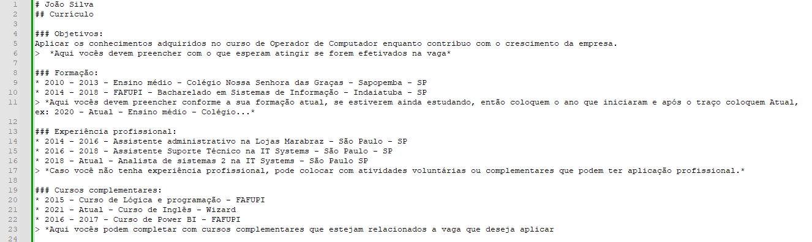

Markdown é uma linguagem de marcação muito usado para Documentação Técnica, pois oferece uma alternativa prática e rápida para formatação de textos.
Plataformas como Github fazem uso amplamente de arquivos Markdown por conta de sua praticidade e o pouco espaço que ele ocupa.
O lado negativo esta atrelado ao fato de que não possuí suporte em recursos como CSS, Javascript como o HTML, que também é uma linguagem de marcação, amplamente usada em sites e diversos recursos web.
Vocês devem criar um currículo usando a formatação Markdown.
Abram o Notepad++ e criem um arquivo chamado curriculo.md
Usem a imagem abaixo como referência para editar e o arquivo pdf Guia Markdown para Iniciantes para usarem os atalhos para formatar.

Ao Concluir enviar como anexo por e-mail para leandro.nagata@edu.sc.senai.br